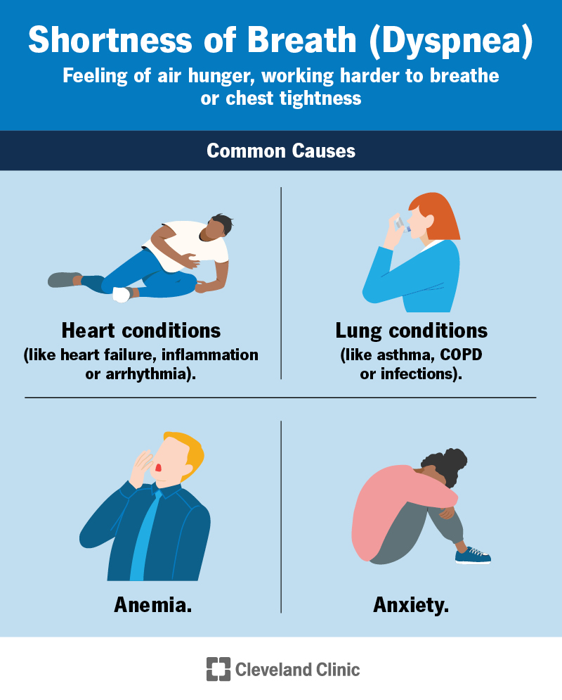
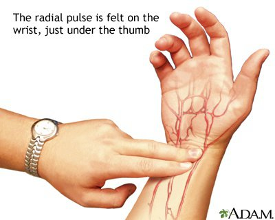

What is Electric Shock ?
- The human body conducts electricity.
- Disconnect the power supply before trying to help someone suffering from an electric shock.
- Be especially careful in wet environments and around fallen powerlines, they may still be conducting electricity even if they are broken or not moving.
- Always hire a licensed electrician for all electrical work around the home.
Causes of Electric Shock
Some causes of electric shock include:
- Faulty appliances
- Damaged or frayed cords or extension leads
- Electrical appliances in contact with water
- Incorrect, damaged or deteriorated household wiring
- Downed powerlines
- Lightning strike
If it is safe to do so, disconnect the power supply before trying to help someone with electric shock.
Common Symptoms
Typical symptoms of an electric shock include:
- Unconsciousness
- Difficulties in breathing or no breathing at all
- A weak, erratic pulse or no pulse at all
- Cardiac arrest.
- Burns, particularly at the place where the electricity entered and left the body (entrance and exit burns)


First-Aid For Electric Shock:
- Check for danger – make sure you, the injured person and others around you are safe.
- Try to switch off or disconnect the power supply. Do not touch the person until you are sure power is turned off.
- Be careful in wet environments, such as bathrooms, as water conducts electricity.
- If you are in a building or the power lines have come down, it may be safer to disconnect the whole electricity supply. You may need to wait for authorised electricity personnel to do this especially if there are live wires.
- If you cannot switch off the power supply, try to remove the person without touching them directly. Use something that is dry and does not conduct electricity (such as a wooden broom handle)
- Send for help – Call triple zero (000) for an ambulance. The operator will organise assistance for you while you continue talking on the phone. They may give you first aid instructions over the phone. If you can, put your phone on loudspeaker.
Safety Tips Around the home to reduce the risk of Electric Shock
You can reduce the risk of electric shock in your home by taking a few precautions:
- Do not remove a plug from a power point by pulling on the cord – pull the plug instead.
- Keep electrical appliances away from wet areas. Electricity and water don’t mix.
- Have safety switches installed by an electrician.
- Buy portable power boards with built-in safety switches.
- Insert safety plugs into unused power points to stop children from inserting objects into them.
- If you use a metal ladder, make sure it has rubber feet. When metal contacts the ground it can increase the risk of electric shock.
- When buying electrical appliances, check they meet Australian safety standards. Be extra cautious when shopping online.